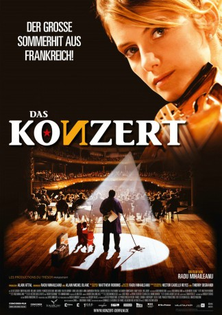

#2338 Das Konzert
 
 IMDB-Wertung: 7.6 / 10
IMDB-Wertung: 7.6 / 10  Metascore: 60
Metascore: 60 
Der Dirigent des Bolschoi-Orchesters verliert seinen Job, weil er seine jüdischen Mitarbeiter nicht entlassen will. Nun arbeitet er als Putzmann an seiner einstigen Wirkungsstätte. Dort lässt er ein Fax mit der Einladung des Orchesters nach Paris aus dem Büro des Direktors verschwinden und hat die verrückte Idee, mit seinem Orchester in alter Besetzung unter falschem Namen im Théâtre du Châtelet zu spielen. Bereits die Fahrt nach Paris wird zu einem Desaster, doch das Konzert allem Unbill zum Trotz ein Erfolg.
Jahr: 2009
Dauer: 119 Minuten
FSK: 0
Land: Frankreich Studio: Concorde FilmverleihTonspuren:
Untertitel: Deutsch,
Auflösung: 1080p (1920x816) Größe: 9594 MB
Genre: Komödie, Drama, Musik
Regisseur: Radu Mihaileanu
Drehbuch: Radu Mihaileanu, Alain-Michel Blanc, Matthew Robbins, Radu Mihaileanu, Héctor Cabello Reyes
Soundtrack: Armand Amar
Darsteller:
- Aleksey Guskov als Andrey Simonovich Filipov
 Mélanie Laurent als Anne-Marie Jacquet / Lea
Mélanie Laurent als Anne-Marie Jacquet / Lea François Berléand als Olivier Morne Duplessis
François Berléand als Olivier Morne Duplessis Miou-Miou als Guylène de La Rivière
Miou-Miou als Guylène de La Rivière Vlad Ivanov als Pyotr Tretyakin
Vlad Ivanov als Pyotr Tretyakin Guillaume Gallienne als Laudeyrac
Guillaume Gallienne als Laudeyrac- Maria Dinulescu als Femme Genkine
 Mihai Calin als Yitzhak
Mihai Calin als Yitzhak- Eric Judor als Et la particiaption exeptionnelle de
- Dragos Onisei als The Wedding Drummer , uncredited
- Dmitriy Nazarov als Aleksandr 'Sasha' Abramovich Grosman
- Valeriy Barinov als Ivan Gavrilov
- Lionel Abelanski als Jean-Paul Carrère
- Laurent Bateau als Bertrand
- Anna Kamenkova als Irina Filipova
 Roger Dumas als Momo
Roger Dumas als Momo- Anghel Gheorghe als Vassili
- Aleksandr Komissarov als Viktor Vikich
- Vitalie Bichir als Moïse
- Despina Stanescu als Rivka
- Valentin Teodosiu als Leonid Vinitchenko
- Ion Sapdaru als Kostin Genkine
- Anamaria Ferentz als Chanteuse mariage Genkine
- Silvia Popa als Mère Tretiakine
- Marie Rosse als Femme Tretiakine
- Florian Budeanu als Anatoli Sokol
- David Marcian als Musicien Cantine 1
- Marke Czerniawski als Musicien Cantine 2
- Lavrenth Nujnoi als Musicien Variété 1
- Andrei Karassenko als Musicien Variété 2
- Théodore Komaniecki als Misha Taxi
- Bogdane Antoane als Déménageur corniste
- Gheorghe Frunza als Dimitri Déménageur corniste
- Romeo Ciocarian als Déménageur Alto
- Ioan Gusa als Marchand de légumes Basson
- Aurel Orosanu als Marchand de Samovars Haubois
- Constantine Grigore als Feodor
- Valeriu Negruta als Grigori
- Sigismond Cachot als Mitia
- Egatherina Tudorache als Katerina
- Evuguenia Fabre als Maya Chapochnikova
- Ioan Coman als Assistant Leonid
 Sara Martins als Secrétaire Duplessis
Sara Martins als Secrétaire Duplessis- Patrick Zard als Réceptionniste Hôtel
- Constantin Barbulescu als Makarov
- Sofila Ouzahir als Serveuse Café Chinois
- Bing Yin als Patron Café Chinois
- Philippe Uchan als Patron Resto Français
- Hervé Pauchon als Barman Châtelet
- Ovidiu Cuncea als Postier
Datei: X:\2009(G-M)\Konzert, Das (2009, FSK0, 1920x816).mkv seit 31.10.2015
Festplatte: HD 2009(G-Z)-2010(A-F)
 Es gibt insgesamt 82 Filme in der Gruppe '2009(G-M)'
Es gibt insgesamt 82 Filme in der Gruppe '2009(G-M)'